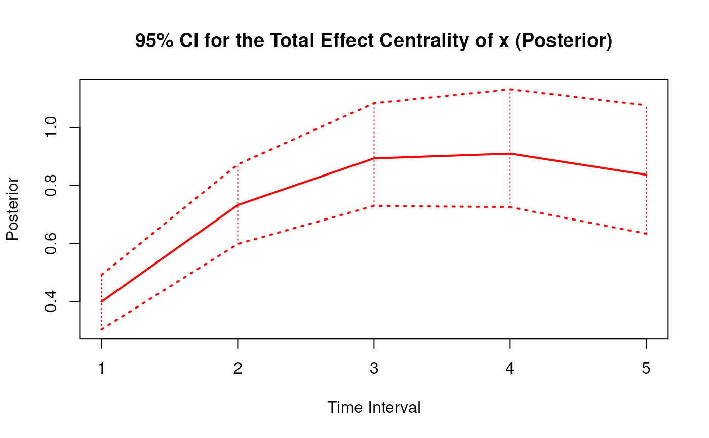
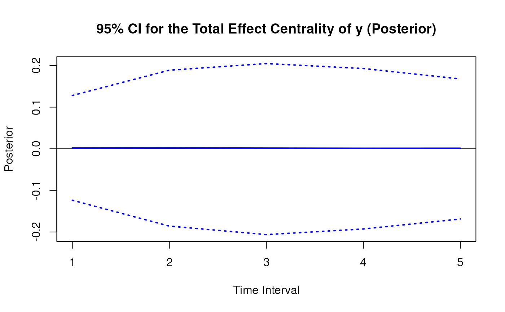
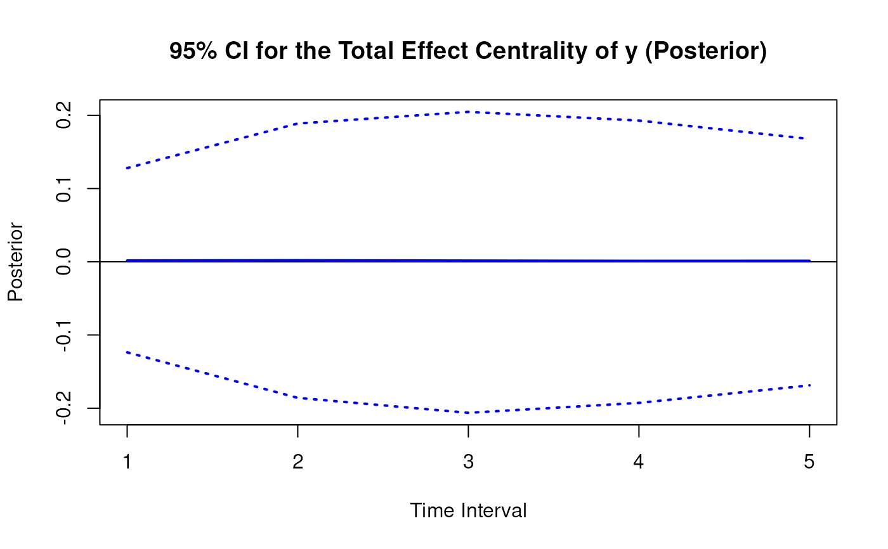

Posterior Distribution of the Total Effect Centrality Over a Specific Time Interval or a Range of Time Intervals
Source:R/cTMed-posterior-total-central.R
PosteriorTotalCentral.RdThis function generates a posterior distribution of the total effect centrality over a specific time interval \(\Delta t\) or a range of time intervals using the posterior distribution of the first-order stochastic differential equation model drift matrix \(\boldsymbol{\Phi}\).
Arguments
- phi
List of numeric matrices. Each element of the list is a sample from the posterior distribution of the drift matrix (\(\boldsymbol{\Phi}\)). Each matrix should have row and column names pertaining to the variables in the system.
- delta_t
Numeric. Time interval (\(\Delta t\)).
- ncores
Positive integer. Number of cores to use. If
ncores = NULL, use a single core. Consider using multiple cores when number of replicationsRis a large value.- tol
Numeric. Smallest possible time interval to allow.
Value
Returns an object
of class ctmedmc which is a list with the following elements:
- call
Function call.
- args
Function arguments.
- fun
Function used ("PosteriorTotalCentral").
- output
A list the length of which is equal to the length of
delta_t.
Each element in the output list has the following elements:
- est
Mean of the posterior distribution of the total, direct, and indirect effects.
- thetahatstar
Posterior distribution of the total, direct, and indirect effects.
Details
See TotalCentral() for more details.
References
Bollen, K. A. (1987). Total, direct, and indirect effects in structural equation models. Sociological Methodology, 17, 37. doi:10.2307/271028
Deboeck, P. R., & Preacher, K. J. (2015). No need to be discrete: A method for continuous time mediation analysis. Structural Equation Modeling: A Multidisciplinary Journal, 23 (1), 61–75. doi:10.1080/10705511.2014.973960
Ryan, O., & Hamaker, E. L. (2021). Time to intervene: A continuous-time approach to network analysis and centrality. Psychometrika, 87 (1), 214–252. doi:10.1007/s11336-021-09767-0
See also
Other Continuous Time Mediation Functions:
BootBeta(),
BootBetaStd(),
BootIndirectCentral(),
BootMed(),
BootMedStd(),
BootTotalCentral(),
DeltaBeta(),
DeltaBetaStd(),
DeltaIndirectCentral(),
DeltaMed(),
DeltaMedStd(),
DeltaTotalCentral(),
Direct(),
DirectStd(),
Indirect(),
IndirectCentral(),
IndirectStd(),
MCBeta(),
MCBetaStd(),
MCIndirectCentral(),
MCMed(),
MCMedStd(),
MCPhi(),
MCPhiSigma(),
MCTotalCentral(),
Med(),
MedStd(),
PosteriorBeta(),
PosteriorIndirectCentral(),
PosteriorMed(),
Total(),
TotalCentral(),
TotalStd(),
Trajectory()
Examples
phi <- matrix(
data = c(
-0.357, 0.771, -0.450,
0.0, -0.511, 0.729,
0, 0, -0.693
),
nrow = 3
)
colnames(phi) <- rownames(phi) <- c("x", "m", "y")
vcov_phi_vec <- matrix(
data = c(
0.00843, 0.00040, -0.00151,
-0.00600, -0.00033, 0.00110,
0.00324, 0.00020, -0.00061,
0.00040, 0.00374, 0.00016,
-0.00022, -0.00273, -0.00016,
0.00009, 0.00150, 0.00012,
-0.00151, 0.00016, 0.00389,
0.00103, -0.00007, -0.00283,
-0.00050, 0.00000, 0.00156,
-0.00600, -0.00022, 0.00103,
0.00644, 0.00031, -0.00119,
-0.00374, -0.00021, 0.00070,
-0.00033, -0.00273, -0.00007,
0.00031, 0.00287, 0.00013,
-0.00014, -0.00170, -0.00012,
0.00110, -0.00016, -0.00283,
-0.00119, 0.00013, 0.00297,
0.00063, -0.00004, -0.00177,
0.00324, 0.00009, -0.00050,
-0.00374, -0.00014, 0.00063,
0.00495, 0.00024, -0.00093,
0.00020, 0.00150, 0.00000,
-0.00021, -0.00170, -0.00004,
0.00024, 0.00214, 0.00012,
-0.00061, 0.00012, 0.00156,
0.00070, -0.00012, -0.00177,
-0.00093, 0.00012, 0.00223
),
nrow = 9
)
phi <- MCPhi(
phi = phi,
vcov_phi_vec = vcov_phi_vec,
R = 1000L
)$output
# Specific time interval ----------------------------------------------------
PosteriorTotalCentral(
phi = phi,
delta_t = 1
)
#>
#> Total Effect Centrality
#>
#> $`1`
#> interval est se R 2.5% 97.5%
#> x 1 0.4026 0.0474 1000 0.3085 0.4934
#> m 1 0.4010 0.0409 1000 0.3176 0.4839
#> y 1 0.0014 0.0635 1000 -0.1277 0.1253
#>
# Range of time intervals ---------------------------------------------------
posterior <- PosteriorTotalCentral(
phi = phi,
delta_t = 1:5
)
# Methods -------------------------------------------------------------------
# PosteriorTotalCentral has a number of methods including
# print, summary, confint, and plot
print(posterior)
#>
#> Total Effect Centrality
#>
#> $`1`
#> interval est se R 2.5% 97.5%
#> x 1 0.4026 0.0474 1000 0.3085 0.4934
#> m 1 0.4010 0.0409 1000 0.3176 0.4839
#> y 1 0.0014 0.0635 1000 -0.1277 0.1253
#>
#> $`2`
#> interval est se R 2.5% 97.5%
#> x 2 0.7345 0.0674 1000 0.6111 0.8753
#> m 2 0.4413 0.0540 1000 0.3385 0.5482
#> y 2 0.0018 0.0928 1000 -0.1846 0.1841
#>
#> $`3`
#> interval est se R 2.5% 97.5%
#> x 3 0.8930 0.0866 1000 0.7451 1.0874
#> m 3 0.3664 0.0626 1000 0.2512 0.4950
#> y 3 0.0017 0.1000 1000 -0.2041 0.1959
#>
#> $`4`
#> interval est se R 2.5% 97.5%
#> x 4 0.9079 0.1023 1000 0.7375 1.1396
#> m 4 0.2722 0.0683 1000 0.1431 0.4127
#> y 4 0.0017 0.0944 1000 -0.1922 0.1847
#>
#> $`5`
#> interval est se R 2.5% 97.5%
#> x 5 0.8347 0.1131 1000 0.6537 1.0861
#> m 5 0.1913 0.0708 1000 0.0572 0.3417
#> y 5 0.0020 0.0828 1000 -0.1621 0.1665
#>
summary(posterior)
#> variable interval est se R 2.5% 97.5%
#> 1 x 1 0.402617113 0.04736693 1000 0.30848863 0.4934005
#> 2 m 1 0.401022893 0.04086371 1000 0.31761523 0.4838669
#> 3 y 1 0.001422418 0.06352049 1000 -0.12774064 0.1253316
#> 4 x 2 0.734494663 0.06743364 1000 0.61108334 0.8752536
#> 5 m 2 0.441345838 0.05404808 1000 0.33846744 0.5482102
#> 6 y 2 0.001817357 0.09280206 1000 -0.18460271 0.1840568
#> 7 x 3 0.893039945 0.08660798 1000 0.74514581 1.0873780
#> 8 m 3 0.366424873 0.06257902 1000 0.25122899 0.4950256
#> 9 y 3 0.001699378 0.09995931 1000 -0.20414123 0.1958981
#> 10 x 4 0.907914495 0.10229651 1000 0.73747799 1.1395696
#> 11 m 4 0.272240243 0.06831946 1000 0.14308091 0.4127058
#> 12 y 4 0.001663828 0.09439566 1000 -0.19216836 0.1847016
#> 13 x 5 0.834702987 0.11307846 1000 0.65372889 1.0860634
#> 14 m 5 0.191298644 0.07084738 1000 0.05720004 0.3416777
#> 15 y 5 0.001998024 0.08277552 1000 -0.16214503 0.1664557
confint(posterior, level = 0.95)
#> variable interval 2.5 % 97.5 %
#> 1 x 1 0.30848863 0.4934005
#> 2 m 1 0.31761523 0.4838669
#> 3 y 1 -0.12774064 0.1253316
#> 4 x 2 0.61108334 0.8752536
#> 5 m 2 0.33846744 0.5482102
#> 6 y 2 -0.18460271 0.1840568
#> 7 x 3 0.74514581 1.0873780
#> 8 m 3 0.25122899 0.4950256
#> 9 y 3 -0.20414123 0.1958981
#> 10 x 4 0.73747799 1.1395696
#> 11 m 4 0.14308091 0.4127058
#> 12 y 4 -0.19216836 0.1847016
#> 13 x 5 0.65372889 1.0860634
#> 14 m 5 0.05720004 0.3416777
#> 15 y 5 -0.16214503 0.1664557
plot(posterior)

 
